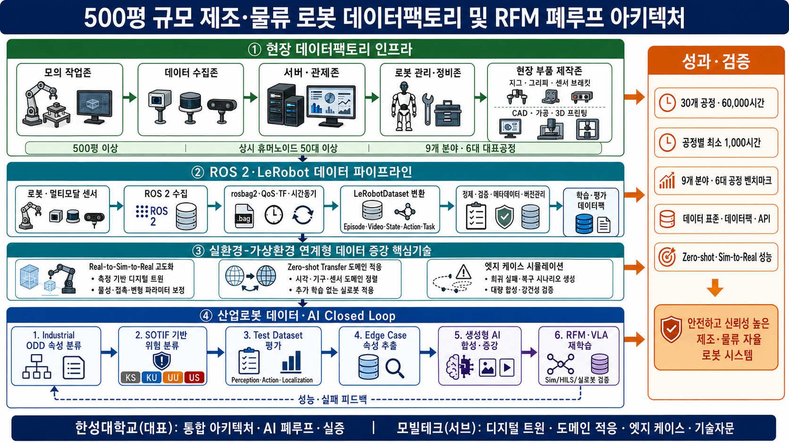

연차별 목표와 성과지표¶
담당 분야 — 실환경–가상환경 연계형 데이터 증강
산업통상부 공고 제2026-549호 · 연구개발과제 1 「로봇 데이터팩토리 구축 및 로봇파운데이션모델(RFM) 개발」
2026-09-01 한성대 Physical AI R&R 최신본을 기준으로 정렬했습니다
| 상태 | 해당 내용 |
|---|---|
| 제안서 반영 기준 | 연차별 목표·연구내용·핵심 결과물·정량목표·성과지표, 담당 분야와 4대 역할 |
| 측정설계·내부 관리 | KPI 분모·산식·반복·통계, 세부 완료판정, 연차별 자문 기록 |
| 제안·잠정 | 대표 정량목표의 시험조건·기준선, 연구개발비 금액 환산 |
| 확인 필요 | 대표 제조 작업·소재·로봇, RFM 인터페이스, 실증환경, 예산 5 % 의 모수, 모빌테크 협약 형태 |
정량목표의 목표값과 연차 귀속은 2026-09-01 R&R을 그대로 따릅니다. 측정설계는 목표값을 바꾸는 추가 KPI가 아니라, 협약 후 같은 방법으로 재현하기 위한 보조 정의입니다. 대표 제조 작업·소재·실증환경이 확정되면 세부 시험조건을 컨소시엄 공통 기준으로 동결합니다.
제안·잠정 수치는 협약 목표로 인용하지 않습니다. 대표 제조 작업·소재·실증환경이 확정되고 기준 데이터를 실측한 뒤 컨소시엄 공통 KPI 로 동결합니다.
기간은 43개월 · 4개 차년도 — 1차 9개월 · 2차 10개월 · 3차 12개월 · 4차 12개월입니다.
한 줄로 말하면¶
한성대학교는 실제 로봇의 실패를 가상환경에서 재현하고, 학습 가능한 데이터로 바꾸는 일을 맡습니다.
세 기술축을 각각 범용 플랫폼으로 개발하지 않습니다. 대표 제조 작업 1~2개를 정하고, 그 작업 하나를 다음 순환으로 끝까지 관통시킵니다.
flowchart TB
REAL["REAL | 실제 제조현장<br/>대표 작업 1~2개<br/>정상 · 실패 · 복구 Log"]
GEO["Geometry Twin | 모빌테크<br/>Simulation‑ready 3D Asset<br/>좌표 · Semantic 정합"]
WFM["World Foundation Model(WFM)<br/>보조 생성수단 · Cosmos / 동급<br/>후보 장면 · 미래상태"]
CORE["한성대학교 | 세 기술축<br/>A · Manufacturing Deformation Engine<br/>B · Demonstration & Recovery Data Engine<br/>C · Ontology·Edge Case Intelligence"]
GATE["Quality Gate | 공통 품질관문<br/>물리정합 · 재현성 · 안전<br/>데이터 품질 · Provenance"]
RFM["RFM | 학습 · 평가<br/>Zero‑shot Transfer · Post‑training"]
TEST["PHYSICAL | 실물검증<br/>HILS · 수요기업<br/>공동 Testbed · Gap 환류"]
OUTPUT["공통 성과<br/>Dataset · Benchmark<br/>논문 · 특허 · 표준"]
REAL --> GEO --> CORE --> GATE --> RFM --> TEST
GEO -.-> WFM -.-> CORE
GATE --> OUTPUT
TEST --> OUTPUT
TEST -.-> REALflowchart TB
REAL["REAL | 제조현장<br/>대표 작업 · 실패 Log"]
GEO["Geometry Twin | 모빌테크<br/>3D Asset · Semantic 정합"]
CORE["한성대 | 세 기술축<br/>A · Deformation Engine<br/>B · Demonstration & Recovery Data Engine<br/>C · Ontology·Edge Case<br/>보조 생성 · Cosmos / 동급 WFM"]
GATE["Quality Gate | 공통 품질관문<br/>물리정합 · 재현성 · 안전"]
RFM["RFM | 학습 · 평가"]
TEST["PHYSICAL | 실물검증<br/>HILS · Testbed · Gap 환류"]
OUTPUT["성과 | Dataset · Benchmark · 표준"]
REAL --> GEO --> CORE --> GATE --> RFM --> TEST
GATE --> OUTPUT
TEST --> OUTPUT
TEST -.-> REAL차별화 포인트는 생성 자체가 아니라 폐루프입니다. 물리·재현성·안전 Gate를 통과한 Episode만 RFM에 공급하고, 실물검증에서 확인된 Domain Gap을 다시 현장·Twin·Scenario에 반영합니다.
왜 범위를 좁히는가
예산은 정부지원연구개발비의 5 % 수준이고 기간은 43개월입니다. 이 규모로 모든 제조 소재와 공정을 다루는 범용 플랫폼을 만들면 어느 것도 끝까지 검증되지 않습니다. 대표 작업 1~2개를 골라 순환을 한 바퀴 완주하는 편이, 넓게 벌여 놓고 미완으로 끝나는 것보다 컨소시엄에 쓸모가 있습니다.
세 기술축의 구체화¶
기존 개발 목표 항목은 그대로 유지합니다. 세 기술축 — Manufacturing Deformation Engine · Demonstration & Recovery Data Engine · Manufacturing Ontology·Edge Case Intelligence — 과 확정된 4대 역할(① Real‑to‑Sim‑to‑Real ② Zero-shot Transfer ③ Edge Case 시뮬레이션 ④ 학술 연구·기술 자문)은 바뀌지 않았습니다.
바뀐 것은 연차별 목표와 진행 내용입니다. 각 축을 범용 플랫폼으로 개발하지 않고 대표 제조 작업 1~2개를 대상으로 구체화했습니다.
아래 표의 오른쪽 열은 그 기능이 3절의 어느 개발 목표로 산출되는지를 가리킵니다. 왼쪽이 한성대가 만드는 기능이고, 오른쪽이 그것이 컨소시엄에 전달되는 이름입니다.
기술축 A · Manufacturing Deformation Engine → 대표 작업의 물리 보정¶
모든 제조 소재를 다루지 않습니다. 대표 작업 1~2개를 선정하고, 실제 센서와 영상으로 마찰·접촉·변형값을 추정해 가상환경을 보정하는 데 집중합니다.
| 개발하는 기능 | 무엇을 하는 기능인가 | 개발 목표로는 |
|---|---|---|
| 물리 특성 보정 기능 | 실제 센서·영상에서 마찰·접촉·강성값을 추정해 가상환경 파라미터를 맞춘다 | Physics Consistency Evaluator v1 · Physics Calibration |
| 제조 변형 모사 기능 | 삽입·압입에서 생기는 압축·복원·잔류변형을 가상환경에서 재현한다 | 제조 Domain Variation Library v1 |
| 대상 소재별 물성값 | 대표 소재를 실측해 시뮬레이션이 쓸 수 있는 물성 세트로 정리한다 | 제조 Domain Variation Library v1 |
| 실제–가상 비교결과 | 같은 조건에서 실물과 가상의 접촉력·변형 차이를 수치로 낸다 | Domain Gap 프로토콜 v1 · Transfer Decision Manager |
기술축 B · Demonstration & Recovery Data Engine → 실패상태 복원과 복구 행동 증강¶
학생이 먼저 실제 로봇을 원격조작해 정상 동작과 대표 실패·복구 사례를 수집합니다. 그다음이 핵심입니다 — 가상환경에서 실패 직전의 로봇 관절각·물체 위치·접촉 상태를 저장해 두고, 그 상태로 되돌아가 다른 복구 조작을 여러 번 시도합니다.
실제 로봇으로 실패 상황을 매번 처음부터 만들지 않고도 하나의 실패에서 여러 복구 데이터를 얻습니다. 생성 데이터의 충돌·비정상 동작은 자동으로 걸러냅니다.
| 개발하는 기능 | 무엇을 하는 기능인가 | 개발 목표로는 |
|---|---|---|
| 원격조작 데이터 수집도구 | 학생이 실물 로봇을 조작해 정상·실패·복구를 규격대로 기록한다 | 데이터 수집환경 (Edge Case Compiler 의 입력) |
| 실패상태 저장·복원 기능 | 실패 직전의 관절각·물체 위치·접촉 상태를 저장해 그 지점으로 되돌린다 | Edge/Recovery 증강 Dataset |
| 복구 행동 증강 기능 | 되돌린 상태에서 다른 복구 조작을 반복 시도해 하나의 실패에서 여러 복구를 얻는다 | Edge/Recovery 증강 Dataset |
| 자동 데이터 검수 기능 | 충돌·관통·비정상 동작이 섞인 생성 결과를 자동으로 걸러낸다 | Multi-stage Validation Gate (다단계) |
기술축 C · Manufacturing Ontology·Edge Case Intelligence → RFM 취약조건 탐색¶
Asset → Process → Task → State → Event → Failure → Recovery 구조로 어떤 설비와
작업에서, 어떤 상태 변화로 실패했고, 어떤 복구 행동이 효과적이었는지를 연결해
저장합니다.
이후 실제 실패 사례나 RFM 평가결과를 기준으로 물체 위치·각도·마찰·물성·센서오차를 조금씩 바꿔가며 실패가 시작되는 경계조건을 찾고, 그 조건을 가상환경에서 다시 만들어 복구 데이터 생성과 재학습에 씁니다.
| 개발하는 기능 | 무엇을 하는 기능인가 | 개발 목표로는 |
|---|---|---|
| 작업·상태·실패·복구 관계 구조 | 어떤 작업의 어떤 상태 변화가 어떤 실패로 이어졌고 무엇이 복구에 통했는지 연결해 저장한다 | Scene–Action–State–Event 표준 v1 |
| RFM 취약조건 탐색 기능 | 위치·각도·마찰·물성·센서오차를 조금씩 바꿔 RFM 이 실패하기 시작하는 경계를 찾는다 | Prompt·Condition Compiler v1 |
| 실제 실패 기반 가상 시나리오 생성 기능 | 찾아낸 경계조건을 실행 가능한 시뮬레이션 시나리오로 만든다 | Edge Case Compiler v1 |
| 실패유형별 복구 데이터 | 실패 유형을 나누고 유형마다 복구 데이터를 채운다 | Edge Case Taxonomy v1 · Edge/Recovery 증강 Dataset |
참고 연구 — 세 기술축이 서 있는 연구 흐름¶
최근 가상환경·시뮬레이션 기반 데이터 획득 연구는 소량의 실제 데이터로 가상환경의 물리 특성을 보정하고, 현재 로봇 모델이 실패하기 쉬운 조건을 집중적으로 만들어 다시 학습하는 방향으로 발전하고 있습니다. 또한 생성한 데이터가 물리적으로 타당한지 자동으로 확인하고, 실제 환경에서 새롭게 발생한 실패를 다시 가상환경에 반영하는 반복 구조에 대한 연구도 늘고 있습니다. 본 과제의 세 기술축은 이 흐름 위에 있습니다.
각 기술축이 최근 연구 흐름 위에 있음을 보이는 대표 연구입니다. 본 과제에서 재현한 결과가 아니라 문헌으로 확인한 선행연구이며, 우리가 무엇을 새로 만들 것인지는 각 세부 항목에 따로 적었습니다.
기술축 A — 물리 보정·Real-to-Sim 관련 연구¶
| 연구 | 검증된 핵심 결과 | 한계와 본 과제 반영 |
|---|---|---|
| Real-to-Sim Robot Policy Evaluation with Gaussian Splatting Simulation of Soft-Body Interactions (ICRA 2026, arXiv:2511.04665) | 실제 영상으로 외관과 soft-body 동역학을 식별해 twin을 구성했습니다. 3개 Task 각각에서 여러 정책·checkpoint 평가점의 시뮬레이션–실물 성공률 상관이 Pearson r > 0.9였습니다. | 실물학습 정책의 평가 프록시이며 Task별 초기조건도 16~27개입니다. 본 과제는 실물–가상 정책순위 상관과 신뢰구간을 먼저 검증합니다. |
| Sim, Yet Same: Physics-Aligned Simulator as Zero-Shot Data Scaler in Deformable Worlds (SIM1, ECCV 2026, 공식 프로그램, arXiv:2604.08544) | 제한된 시연으로 twin과 탄성 동역학을 보정한 뒤 합성 trajectory를 확장했습니다. 1:15 실데이터 등가비, 실물 zero-shot 90 %, 미관측 의류 20 %→70 %를 보고합니다. | 소재별 전문가 수동 튜닝이 필요하고 의류 중심입니다. Material Profile 보정·비용대비 성능·미관측 소재 검증의 근거로만 사용합니다. |
| SimWeaver: Zero-Shot RGB Sim-to-Real for Deformable Manipulation (arXiv:2606.15338, 2026-06 프리프린트) | 면밀도·굽힘강성·신장·마찰 같은 측정 가능한 물성값을 소재군 라이브러리로 관리하고 Task당 합성 시연 200개로 학습했습니다. 5개 연성작업×23회에서 평균 91.30 %(Wilson 95 % CI 84.7–95.2 %)를 보고했으며, 광학 증강 제거 시 5개 Task가 모두 0 %였습니다. | 무보정이 아니라 소재군 측정값을 정하고 Asset을 해당 class에 결합하는 구조입니다. 실데이터와의 엄격한 정면 비교는 silk grasping 중심입니다. Material Profile 재사용·ISP 광학 증강·Task별 신뢰구간을 Gate로 반영합니다. |
| Differentiable Physics‑based System Identification for Robotic Manipulation of Elastoplastic Materials (DPSI, IJRR 2025, DOI, arXiv:2411.00554) | 한 번의 실제 상호작용과 불완전한 3D point cloud로 Young’s modulus·Poisson ratio·yield stress·마찰 등 재료·환경 파라미터를 식별합니다. | 국소최적·비식별성·모델 불일치가 남고 체적형 탄소성 재료 범위입니다. 물성 추정값에 식별 불확실성과 재현오차를 함께 저장합니다. |
| Scalable Real2Sim: Physics-Aware Asset Generation Via Robotic Pick‑and‑Place Setups (IROS 2025, DOI, arXiv:2503.00370) | RGB-D와 joint torque로 시각 mesh·충돌 geometry·관성 파라미터를 자동 생성합니다. | 강체 pick‑and‑place·특정 setup 중심입니다. 모빌테크 Geometry Twin을 한성대 Physics Twin으로 잇는 Geometry–Physics Hand-off 근거로 사용합니다. |
| Harnessing with Twisting: Single-Arm Deformable Linear Object Manipulation for Industrial Harnessing Task (IROS 2024, DOI, arXiv:2410.10729) | FANUC/NIST ATB4에서 실제 trajectory 40개로 학습해 단일 전선 두 Task 각 10/10, 순차 다중전선 9/10 후 8/9를 보고했습니다. | 제한된 workcell·소표본입니다. 본 과제는 산업용 배선·삽입형 대표작업에서 별도 재검증합니다. |
본 과제와의 연결 — 이 연구들은 ① 평가 프록시 검증 ② 합성데이터 확장 ③ 측정 물성 재사용 ④ asset 자동생성·물성 식별 ⑤ 산업 제조작업 검증의 근거입니다. 본 과제는 대표 제조작업 1~2개에서 실물–가상 정책순위 상관을 확인하고, 접촉력·변위· 잔류변형의 재현오차와 식별 불확실성을 통과한 Episode만 학습데이터로 편입합니다. Zero-shot과 보정·Post‑training 성능은 서로 다른 평가군으로 분리합니다.
기술축 B — 실패상태 복원·복구 증강 관련 연구¶
| 연구 | 검증된 핵심 결과 | 한계와 본 과제 반영 |
|---|---|---|
| DreamGen: Unlocking Generalization in Robot Learning through Video World Models (CoRL 2025, PMLR, arXiv:2505.12705) | 단일 pick‑and‑place 원격조작 데이터로 비디오 월드모델을 적응시키고 생성영상의 pseudo‑action을 복원했습니다. 논문은 월드모델 2,884개, 정책 미세조정 2,885개 trajectory를 단계별로 표기하며 신규 행동 성공률 11.2 %→43.2 %를 보고합니다. | 상당량의 단일 Task seed data를 다양성으로 확장한 연구이며 실패·복구 전용은 아닙니다. 정상·경계 행동 생성과 pseudo‑action 검증 근거로 한정합니다. |
| Hi-WM: Human-in-the-World-Model for Scalable Robot Post-Training (arXiv:2604.21741, 2026-04 프리프린트) | 실패 직전 상태를 cache해 rollback·branching한 뒤 사람이 짧은 교정행동을 입력합니다. 3개 실물 Task·2개 정책에서 base 대비 평균 +37.9 %p, 사람 교정 없는 WM 대비 +19.0 %p, 실물 상관 r=0.953을 보고합니다. | 평균의 cell별 시행횟수와 신뢰구간이 제시되지 않아 불확실성을 재계산하기 어렵습니다. 본 과제는 상태 재생오차와 Task별 표본수·신뢰구간을 Gate에 포함합니다. |
| EgoRecovery: Acquiring Failure Recovery Ability Through Human Recovery Demonstration (arXiv:2607.19745, 2026-07 프리프린트) | 1인칭 인간 복구데이터를 trajectory 자체가 아닌 교정 시점·크기의 compact corrective intent로 정렬하고 recovery gate가 필요한 상태에서만 활성화합니다. 시간당 수용 데이터는 인간 516.5건, 로봇 49.0건이었고, 50 robot success+50 robot recovery+300 human recovery 조건에서 초기 성공률 80.0 %, 복구 성공률 85.0 %였습니다. | 인간 복구데이터만 쓴 경우 복구 성공률은 8.8 %였고 embodiment별 접촉·재파지에는 로봇 복구데이터가 필요했습니다. 같은 Task family의 관련 실패까지만 검증됐으므로 소량 실로봇 grounding set과 전문가 안전판정을 반드시 결합합니다. |
| Set-Supervised Diffusion Policy: Learning Action-Chunking Diffusion through Corrections (RSS 2026, 공식 논문, arXiv:2606.01865) | 교정 episode의 로봇 부정 action chunk와 사람 긍정 chunk를 함께 보존합니다. 50개 시연+40개 교정 episode의 Insert-T에서 35/40, 일반 Diffusion Policy는 23/40이었습니다. | 사람의 적시 교정과 특정 Task에 의존합니다. positive/negative chunk·개입시점·교정주체를 함께 저장하는 데이터 계약 근거로 사용합니다. |
본 과제와의 연결 — DreamGen은 행동·환경 확장, Hi-WM은 실패 직전 상태
저장·복원·분기 교정, EgoRecovery는 사람 복구 intent와 실로봇 grounding,
Set-Supervised Diffusion Policy는 부정·긍정 action chunk 보존의 근거입니다.
Demonstration & Recovery Data Engine은 실패상태 cache → 다중 교정 branch → 사람 복구 intent → 소량 실로봇 grounding
→ 실물 재검증으로 정의합니다. 학생 데이터는 실로봇 복구데이터를 대체하지 않으며
유급 참여·안전 Protocol·전문가 최종판정을 전제로 합니다.
기술축 C — 실패 조건 탐색·재현 관련 연구¶
| 연구 | 검증된 핵심 결과 | 한계와 본 과제 반영 |
|---|---|---|
| Fail2Progress: Learning from Real-World Robot Failures with Stein Variational Inference (CoRL 2025, PMLR, arXiv:2509.01746) | 관측 실패와 유사한 조건을 시뮬레이션에서 병렬 생성해 targeted dataset을 만들고 재학습했습니다. 계층적 tabletop 정리 86 %(원본 11 %), 미관측 7객체 71 %를 보고합니다. | Sim2Real gap 보정은 다루지 않았고 상태가 pose 중심이라 마찰·질량중심·변형물성을 제외했습니다. 본 과제는 물성을 상태에 포함하고 재현오차를 검증합니다. |
| From Reaction to Anticipation: Proactive Failure Recovery through Agentic Task Graph for Robotic Manipulation (AgentChord, RSS 2026, 공식 논문, arXiv:2605.11951) | task graph에 예상 실패와 복구 분기를 실행 전에 붙입니다. 실물 6개 작업×20회 평균 77.5 %, 복구데이터 fine‑tuning에서 실패 시나리오 39/50을 보고합니다. | 예상하지 못한 실패모드와 IK 불가능 복구가 남습니다. graph 규칙뿐 아니라 RFM 취약조건 탐색을 병행합니다. |
| ASPIRE: Agentic /Skills Discovery for Robotics (arXiv:2607.00272, 2026-07 프리프린트) | 실패 진단→수정→검증→스킬 축적 순환에서 LIBERO-Pro macro 평균 72 %, 실로봇 soda-can Task 13/20→19/20을 보고합니다. | 완전 자율 실세계 학습기가 아니며 frozen frontier LLM·사전정의 API·높은 연산비용에 의존합니다. 자동 검수는 물리·규칙 Gate로 둡니다. |
| Predictive Red Teaming: Breaking Policies Without Breaking Robots (RoboART, CoRL 2025, PMLR) | 12개 off-nominal 조건과 500회 이상 hardware trial로 실패율을 예측했습니다. 성공률 예측오차 0.19 미만, 표적 데이터 효율 2~7배를 보고합니다. | 시각·환경 교란 중심이며 모든 접촉물리를 포괄하지 않습니다. RFM 취약조건의 안전한 선별·우선순위화 근거입니다. |
| Geometric Red-Teaming for Robotic Manipulation (GRT, CoRL 2025, PMLR) | 실제 CrashShapes에서 성공률이 원래 형상 90 %에서 적대 형상 22.5 %로 낮아졌고 blue-team 재학습 후 최대 90 %로 회복됐습니다. | geometry-only 탐색이며 사용자 제약과 연산비용이 필요합니다. Geometry Twin에서 실패경계를 찾고 재학습하는 근거입니다. |
본 과제와의 연결 — 기존 실패의 재현·graph 복구·스킬 수정에 더해 RoboART와 GRT는
미관측 시각·환경·형상 취약조건을 능동 탐색합니다. 본 과제는
Asset → Process → Task → State → Event → Failure → Recovery를 제조 Ontology로 기록하고,
발견 조건을 Edge Case Compiler로 재현해 재학습·실물 재검증까지 닫습니다.
D 공통 검증·전이 판정·데이터 품질 관련 연구¶
| 연구 | 검증된 핵심 결과 | 한계와 본 과제 반영 |
|---|---|---|
| Evaluating Real-World Robot Manipulation Policies in Simulation (SIMPLER, CoRL 2024, PMLR) | 2개 robot embodiment·8개 Task family에서 1,500회 이상 sim–real paired evaluation을 수행했습니다. | 강체·고정 camera·특정 system 중심입니다. Transfer Decision Manager의 정책선별용 사전 Gate로 쓰되 변형체 상관은 별도 검증합니다. |
| Can We Detect Failures Without Failure Data? Uncertainty-Aware Runtime Failure Detection for Imitation Learning Policies (FAIL‑Detect, RSS 2025, 공식 논문) | failure data 없이 success-only uncertainty로 4개 simulation·2개 hardware Task를 평가해 최상 평균 balanced accuracy가 simulation 약 78 %, hardware 약 72 %였습니다. | ID-only calibration에서는 OOD true-negative rate가 0에 가까워질 수 있습니다. OOD·경계 실패를 별도 평가군으로 확보합니다. |
| Curating Demonstrations using Online Experience (Demo-SCORE, RSS 2025, 공식 논문) | online 성공·실패 classifier를 교차검증하고 demonstration을 선별·재학습해 성공률을 15~35 %p 높였습니다. | rollout 비용과 Task별 classifier가 필요합니다. 데이터 Quality Gate를 수집→선별→재학습→실물평가 폐루프로 운영합니다. |
본 과제와의 연결 — SIMPLER는 전이 전 정책선별, FAIL‑Detect는 runtime OOD·실패 Gate, Demo-SCORE는 online 경험 기반 데이터 선별의 근거입니다. 합성데이터를 무조건 편입하지 않고 승인 순서는 ① 전이 가능성 ② 실패·OOD ③ 데이터 품질 ④ 실로봇 재검증입니다.
인용 원칙
위 수치는 각 논문의 특정 Task·장비·표본에서 나온 보고값이며 본 과제 KPI나 자체 재현 결과가 아닙니다. 게재처·서지는 논문·학회·출판사 원문을 2026-09-02 기준으로 확인했습니다. SimWeaver·Hi-WM·EgoRecovery·ASPIRE는 arXiv 프리프린트로, 나머지는 확인된 학회·저널을 병기했습니다. 목표치는 제조작업 기준선 확정 후 별도 관리합니다.
2-2. 연구개발 목표 및 내용¶

현장 데이터팩토리에서 수집한 데이터를 실환경–가상환경 연계형 증강과 RFM 재학습으로 환류하는 전체 구조 · 원본 이미지 열기
{kind=link}
flowchart TB
FIELD["현장 데이터팩토리<br/>모의작업 · 수집 · 관제 · 정비 · 제작"]
PIPE["ROS 2 → LeRobot<br/>동기화 · Episode · Provenance"]
TWIN["6대 대표공정 Twin<br/>2개 → 4개 → 6개 → 동결·이관"]
CORE["한성대 기술 Core<br/>Deformation · Recovery · Edge Case<br/>보조 생성 · Cosmos / 동급 WFM"]
GATE["ODD → SOTIF → Test Dataset<br/>Multi‑stage Validation Gate"]
RFM["RFM 재학습<br/>Sim → HILS → 실로봇 검증"]
FIELD --> PIPE --> TWIN --> CORE --> GATE --> RFM
RFM -. 실패 · Domain Gap .-> FIELD모바일에서는 상세 시스템 블록도를 핵심 데이터·검증 폐루프로 압축해 표시합니다. 전체 세부 항목은 위쪽의 원본 이미지 링크에서 확대해 확인할 수 있습니다.
제안서 작성 기준
본 절의 연차별 목표는 상위과제 전체 통합 관점으로 작성했습니다. 한성대학교는 공동연구개발기관9로서 실환경–가상환경 연계형 데이터 증강, 디지털 트윈, 도메인 적응, Edge Case 생성, 데이터 품질·평가 및 RFM 환류 기술을 담당합니다. 모빌테크는 한성대학교의 서브·협력기관으로 Geometry Twin, Simulation‑ready Asset, 공간 정합 및 현장 갱신을 지원합니다.
500평 이상 데이터팩토리, 상시 휴머노이드 50대 이상, 9개 분야·6대 대표공정, 30개 공정·60,000시간 리얼데이터는 상위과제 공동 목표입니다. 한성대학교는 이 상위목표에 필요한 디지털 트윈, 도메인 적응, Edge Case 생성, 데이터 품질·평가 및 RFM 환류 기술을 담당합니다.
본문에서 Zero-shot Transfer는 목표 로봇에서 추가 정책학습 없이 정책을 적용하는 것으로 정의합니다. Zero-shot Transfer 성능이 기준에 미달할 때 수행하는 Few‑shot·LoRA는 Fallback Adaptation(후속 경량 적응)으로 분리하고 별도 평가군과 지표로 관리합니다. Hardware‑in‑the‑Loop 관련 용어는 HILS(Hardware‑in‑the‑Loop Simulation)로 통일합니다.
[1단계] (1) 1차년도 — 기준 시스템 및 연계 기반 확보¶
① 개발 목표¶
[공동연구개발기관9(한성대학교)]
- Real‑to‑Sim‑to‑Real 디지털 트윈 기술 고도화: 6대 대표공정 디지털 트윈 구축에 착수하고 대상 2개 공정의 기준 Scene과 인수규격을 확정
- Zero‑shot Transfer 기반 도메인 적응: 추가 정책학습 없는 미학습조건 평가체계와 기준환경 성능 측정계획을 수립
- Edge Case 시뮬레이션: 작업–상태–실패–복구 관계와 정상·실패·복구 데이터 수집기반을 정의
- 학술 연구 및 기술 자문: 실제·가상·RFM 연계규격, 재현성 관리체계 및 학술성과 추진기반을 확립
② 개발 내용 및 범위¶
[공동연구개발기관9(한성대학교)]
가. Real‑to‑Sim‑to‑Real 디지털 트윈 기술 고도화
- 6대 대표공정 디지털 트윈 구축계획과 인수규격 확정
- 6대 대표공정(토트 박스 옮기기·토트 박스 쌓기·비전 활용 불량검사·박스 포장 패키징 마감·Bin Picking·Kitting)의 구축순서를 1차 2개, 2차 누계 4개, 3차 누계 6개로 확정하고 컨소시엄 승인을 획득
- 공정별 작업 셀·대상물·로봇·센서 배치의 Scene 구성규격과 공정 트윈 인수검사 기준 수립
- 공정별 ODD·Task Metadata 서식 v1 정의 및 9개 분야·30개 세부공정으로 확장 가능한 공통서식 마련
- 1차년도 대상 2개 공정의 기준 Geometry Asset 인수와 Scene 구성·시나리오 실행 검증
- 대표 제조작업과 실제–가상 비교기준 확정
- 6대 대표공정 중 실측 물성 보정과 폐루프 완주의 심화대상 대표작업 1~2개, 소재 및 접촉현상을 선정하고 컨소시엄 승인을 획득
- 실제 센서·F/T·영상·형상 측정항목과 취득조건 정의
- Domain Gap Protocol v1 수립: 측정항목·조건·반복횟수·판정기준·통계방법 명시
- Geometry–Physics Interface 정의 및 기준 Asset 인수
- 모빌테크 Pilot Scan·기준 Geometry Asset 인수규격과 검수기준 확정
- 좌표계·축척·원점·Semantic Metadata 연계규격 합의 및 승인
- Data Factory–Physics Twin–RFM Reference Architecture 수립과 실제·가상·RFM 데이터 흐름 정의
나. Zero‑shot Transfer 기반 도메인 적응
- 미학습조건 평가체계 설계
- 미학습 물체·배치·물성·복합조건의 구분정의 및 평가셋 설계
- Zero‑shot Performance Retention 측정 Protocol 초안 작성과 적응 전 측정원칙 명시
- 기준환경 작업성공률의 Baseline 측정계획 수립
- Model Adapter v1의 실환경·가상환경·RFM 데이터 연계규격 정의
다. Edge Case 시뮬레이션
- 작업–상태–실패–복구 관계구조 정의
- Scene–Action–State–Event 표준 v1 수립
- Edge Case Taxonomy v1 구축 및 대표작업 주요 실패유형 확정
- Demonstration & Recovery Data Engine 수집기반 정의
- 정상·실패·복구 데이터의 수집항목과 상태변수 정의
- 실패 직전 상태의 Checkpoint Schema 초안 작성
라. 학술 연구 및 기술 자문
- RFM 연계규격 기술자문
- RFM 기관과 Observation·Action·Task·Model Interface 및 평가기준 협의
- 재현 가능한 기준환경 구축과 성과관리
- 모델버전·Seed·입력조건 기반 생성·검증 이력의 재현체계 확보
- 국내외 학술발표 1건 및 기술문서·자문 의견서 1건
1차년도 완료조건
제안 목표(안): 6대 대표공정 트윈 구축계획·인수규격 및 대표작업·실패유형의 컨소시엄 승인, 대상 2개 공정 Scene 구성·시나리오 실행검증, 기준 Geometry Asset 인수검사, 좌표계·Semantic 규격 승인, Domain Gap 측정기준 확정을 완료합니다. 동일 Seed·Model·Asset·입력조건에서 주요 상태변수의 허용오차 내 재현율은 95 % 이상, 필수 Observation·Action·Task 필드 변환 성공률은 99 % 이상을 목표로 합니다.
지원 산출물 인수조건(모빌테크): 좌표계·축척·Semantic 규격을 충족하고 1차년도 대상 2개 공정의 기준 Asset 인수검사를 통과해야 합니다.
[2단계] (1) 2차년도 — Deformation·Data Engine v1 개발¶
① 개발 목표¶
[공동연구개발기관9(한성대학교)]
- Real‑to‑Sim‑to‑Real 디지털 트윈 기술 고도화: 6대 대표공정 디지털 트윈을 누계 4개 공정으로 확장하고 Manufacturing Deformation Engine v1을 개발
- Zero‑shot Transfer 기반 도메인 적응: 미학습조건 성능유지율과 전이 가능성을 정량화하는 평가기준과 지표를 개발
- Edge Case 시뮬레이션: 실행 가능한 생성조건 Compiler와 실패·복구 데이터 수집환경을 구축
- 학술 연구 및 기술 자문: 물리 보정·도메인 적응 방법론을 논문화하고 특허·SW·기술자문 성과를 확보
② 개발 내용 및 범위¶
[공동연구개발기관9(한성대학교)]
가. Real‑to‑Sim‑to‑Real 디지털 트윈 기술 고도화
- 6대 대표공정 디지털 트윈 확장: 누계 4개 공정
- 추가 2개 공정의 Simulation‑ready Asset 인수와 작업 셀·대상물·로봇·센서 Scene 구성
- 구축 공정별 기본 Physics Profile 적용 및 Material Profile의 공정 단위 Mapping
- Manufacturing Domain Variation Library v1의 공정 단위 적용: 마찰·공차·재질·조명조건 변이
- 공정 트윈 LOD·Collision·Metadata 인수검사와 공정별 버전 등록
- Manufacturing Deformation Engine v1 개발
- 대표소재의 마찰·강성·감쇠·복원·임계값 실측 및 Material Profile 구축
- 접촉·압축·복원·잔류변형 모사기능 개발: 범용 Physics Engine의 신규개발이 아니라 Isaac Sim 등 기존 Simulator 기반 제조특화 물리모듈로 구현
- Manufacturing Domain Variation Library v1 구축
- Physics Calibration 및 정합성 검증
- 실측 물성값의 Physics Twin 적용과 Parameter Identification·Calibration 절차 수립
- Physics Consistency Evaluator v1 개발 및 생성결과의 물리적 가능성 자동판정
- 모빌테크 Simulation‑ready Asset의 LOD·Collision·Metadata 인수검사 수행
나. Zero‑shot Transfer 기반 도메인 적응
- 전이 가능성 지표 개발
- Transferability Score v1 개발 및 미학습조건 성능유지율의 지표·측정법 정의
- Zero‑shot Transfer 기준환경 Baseline과 미학습조건 평가셋 설계
- 조건별 물체·배치·물성·복합조건 분리측정과 Macro‑average 산출방식 확정
다. Edge Case 시뮬레이션
- 생성조건 Compile 체계 구축
- Prompt·Condition Compiler v1 개발 및 생성조건을 Simulation 실행조건으로 변환
- Edge Case Compiler v1 개발 및 RFM 취약·경계조건을 실행 가능한 Scenario로 변환
- Demonstration & Recovery Data Engine 수집환경 가동
- 실패 직전 상태 Checkpoint 저장기능 v1 개발
- 원격조작 기반 정상·실패·복구 데이터 수집환경 가동
- Scene–Action–State–Event 규격에 따른 데이터 축적체계 운용
라. 학술 연구 및 기술 자문
- 방법론 성과화
- 물리 보정·도메인 적응 방법론 SCI(E) 논문 1편 및 학술발표 2건 추진
- Manufacturing Deformation Engine SW 프로그램 등록 1건
- 특허출원 1건 및 기술문서·자문 의견서 1건
2차년도 완료조건
제안 목표(안): 누계 4개 공정의 Geometry Asset LOD·Collision·Metadata 검수, 실측 물성 적용, 접촉력 재현오차 NRMSE 20 % 이하, 물리 비정합 데이터 탐지 Recall 85 % 이상 및 False Positive Rate 15 % 이하, Checkpoint 저장과 정상·실패·복구 데이터 수집환경 가동을 완료합니다.
지원 산출물 인수조건(모빌테크): 누계 4개 공정 Asset의 LOD·Collision·Metadata 검수를 통과하고 Simulation‑ready Asset이 Physics Twin에서 정상 구동해야 합니다.
[3단계] (1) 3차년도 — Zero‑shot Transfer 및 Edge/Recovery 검증¶
① 개발 목표¶
[공동연구개발기관9(한성대학교)]
- Real‑to‑Sim‑to‑Real 디지털 트윈 기술 고도화: 나머지 2개 공정을 추가해 6대 대표공정 디지털 트윈을 완성하고 실측 기반 재보정·실물연계 검증을 수행
- Zero‑shot Transfer 기반 도메인 적응: 추가 정책학습 없는 전이 판정과 Fallback Adaptation을 분리해 성능유지율·회복률을 검증
- Edge Case 시뮬레이션: 실패상태 복원·복구행동 다중분기·다단계 Validation Gate를 연결한 사전 폐루프를 완주
- 학술 연구 및 기술 자문: 전이 평가·Edge Case 검증 방법론을 논문화하고 RFM 기관의 데이터셋·평가기준 수립을 지원
② 개발 내용 및 범위¶
[공동연구개발기관9(한성대학교)]
가. Real‑to‑Sim‑to‑Real 디지털 트윈 기술 고도화
- 6대 대표공정 디지털 트윈 전체 구축: 누계 6개 공정
- 나머지 2개 공정 Asset 인수·Scene 구성으로 6대 대표공정 트윈 구축 완료
- 공정별 세부 Scenario 실행 Script를 연계해 9개 분야·30개 세부공정 Scenario 확장 지원
- 6개 공정 트윈의 Simulation–HILS–Real Robot Interface 적용성 점검: Domain Gap 정밀측정은 심화 대표작업을 우선 수행
- 실측 기반 재보정과 실물연계 검증
- Physics Calibration 수행 및 실측 물성값 기반 가상환경 물리 Parameter 재보정
- Simulation–HILS–Real Robot 공통 Interface 구축
- 동일 Asset Version 기준 실제–가상 성능차이 측정과 Domain Gap 분석
나. Zero‑shot Transfer 기반 도메인 적응
- 전이판정과 단계적 적응
- Transfer Decision Manager 개발: 직접 적용·경량 적응·추가학습·적용보류 판정
- Zero‑shot 평가군은 추가 정책학습 없이 측정하고, 기준 미달 시에만 Few‑shot·LoRA 기반 Fallback Adaptation을 별도 평가
- OOD·위험도 평가기능 개발과 미학습조건 평가셋 기반 탐지성능 확보
- Zero‑shot Performance Retention과 Fallback Adaptation Recovery Rate의 분리 측정·보고체계 확립
다. Edge Case 시뮬레이션
- 복구 데이터 증강과 품질관문
- 상태 Restore·복구행동 다중분기 v1 개발 및 하나의 실패에서 복수 복구데이터 확보
- Multi‑stage Validation Gate 구축: 물리정합·재현성·안전·데이터 품질·Provenance 다단계 검수
- Edge/Recovery 증강 Dataset 구축: 정상·실패·복구·가상생성을 구분하고 학습·검증·평가 용도 표시
- 대표 실패유형 1건 이상의 사전 폐루프 완주: 저장 → 복원 → 분기 → Gate → HILS
라. 학술 연구 및 기술 자문
- 전이 평가방법론 성과화
- 전이 평가·Edge Case 검증 방법론 SCI(E) 논문 1편 및 학술발표 2건 추진
- Multi‑stage Validation Gate SW 프로그램 등록 1건
- 특허출원 1건 및 기술문서·자문 의견서 1건
- RFM 기관과 데이터셋 Schema·평가기준 협의 및 기술자문
3차년도 완료조건
제안 목표(안): Zero‑shot Performance Retention 70 % 이상을 추가 정책학습 전에 측정하고, Fallback Adaptation Recovery Rate는 별도 산정합니다. 전이 판정 일치도 80 % 이상, OOD 탐지 Recall 85 % 이상, 생성 데이터 검수 완료율 90 % 이상, 동일 Asset Version 기반 Simulation–HILS–Real 비교 및 6대 대표공정 트윈 구축을 완료합니다.
지원 산출물 인수조건(모빌테크): 6대 대표공정 전체 Asset과 변동조건 Asset을 제공하고 공정별 Version Traceability를 확보해야 합니다.
[4단계] (1) 4차년도 — Closed‑loop 완주 및 표준화¶
① 개발 목표¶
[공동연구개발기관9(한성대학교)]
- Real‑to‑Sim‑to‑Real 디지털 트윈 기술 고도화: 6대 대표공정 디지털 트윈의 최종 Version을 동결·이관하고 제3자 재현성을 검증
- Zero‑shot Transfer 기반 도메인 적응: Robust Operating Envelope와 Cross‑domain Benchmark를 통해 강건성·일반화 성능을 종합검증
- Edge Case 시뮬레이션: 실패 재현–복구 생성–RFM 재학습–실물 재검증의 Closed‑loop를 자동화하고 1회 이상 완주
- 학술 연구 및 기술 자문: 데이터·평가·Validation 절차의 표준안과 기술백서를 완성하고 최종 학술·지식재산 성과를 확보
② 개발 내용 및 범위¶
[공동연구개발기관9(한성대학교)]
가. Real‑to‑Sim‑to‑Real 디지털 트윈 기술 고도화
- 6대 대표공정 디지털 트윈 Version 동결과 이관
- 6대 대표공정 Twin Asset·Scenario·Metadata의 최종 Version 동결과 재현성 검증
- 공정별 Twin Package의 데이터팩토리 주관기관 이관과 활용절차 문서화
- 제3자 재현절차에 6대 대표공정 Twin을 포함하고 절차만으로 재현 가능한 수준 확보
- 실물 재검증과 운용체계 확립
- 실제 실패의 가상환경 재현과 재학습 모델의 실물로봇 재검증
- Real‑to‑Sim‑to‑Real 운용 Guideline 완성과 제3자 재현시험
- 최종 Geometry·Physics Twin Version 동결과 재현성 검증
나. Zero‑shot Transfer 기반 도메인 적응
- 강건성 평가와 일반화 검증
- Robust Operating Envelope 평가모듈 개발 및 모델의 안정 동작조건 범위 측정
- Cross‑domain Physical AI Benchmark 구축 및 작업·소재 변화에 공통 적용 가능한 비교기준 확립
- Zero‑shot과 Fallback Adaptation의 적용조건·일반화 성능 검증 및 Model Version 변경 대응절차 수립
다. Edge Case 시뮬레이션
- 폐루프 완주와 자동화
- Closed‑loop RoboOps Toolchain 개발: 실패 재현 → 복구 생성 → RFM 재학습 → 재검증 자동화
- 소량 실로봇 Grounding을 수행해 3차년도 기능을 실로봇·RFM과 연결
- Real Failure → ODD/Edge Attribute Extraction → Simulation Reproduction → Recovery Generation → RFM Retraining → Sim/HILS/Real Validation 순환 1회 이상 완주
- Edge/Recovery 데이터 적용 전후의 실제 성공률 변화, 안전위반 및 Recovery Rate 병행보고
라. 학술 연구 및 기술 자문
- 표준화와 최종 성과화
- 데이터·평가·Validation 절차 표준제안 1건
- Engine 규격·측정정의·운용절차를 수록한 최종 기술백서 1건
- SCI(E) 논문 1편, 학술발표 2건, 특허출원 1건·등록 1건 및 Closed‑loop RoboOps Toolchain SW 등록 1건 추진
- 컨소시엄 기술 의사결정 지원과 기술문서·자문 의견서 1건
4차년도 완료조건
제안 목표(안): 실제 주요 실패 가상 재현율 70 % 이상, 복구 데이터 확보율 80 % 이상, Edge Case Coverage 80 % 이상, 재학습–실물 재검증 순환 1회 이상, 증강 전 대비 대표 Edge Case 작업성공률 10 %p 이상 향상, 제3자 절차 재현율 90 % 이상, 6대 대표공정 Twin Version 동결·이관 완료를 목표로 합니다.
지원 산출물 인수조건(모빌테크): 최종 실증공간 Asset 갱신을 완료하고 6대 대표공정 Geometry Twin Version을 동결해야 합니다.
2-3. 연구개발과제 수행일정 및 주요 결과물¶
가. 차년도별 수행일정¶
| 세부 연구개발 내용 | 1차년도 9개월 |
2차년도 10개월 |
3차년도 12개월 |
4차년도 12개월 |
|---|---|---|---|---|
| 6대 대표공정 Digital Twin | 구축계획·인수규격 확정, 대상 2개 공정 Scene 검증 | 추가 2개 공정 확장, 누계 4개 공정 인수 | 나머지 2개 공정 확장, 누계 6개 공정 완성 | 6개 공정 Twin Version 동결·이관 |
| Real‑to‑Sim‑to‑Real | 대표작업·Domain Gap Protocol·Geometry–Physics Interface 확정 | Manufacturing Deformation Engine·Physics Consistency Evaluator v1 | Physics Calibration·Simulation–HILS–Real 비교 | 실제 실패 재현·실물 재검증·운용 Guideline |
| Zero‑shot Transfer | 미학습조건 평가셋·Baseline 측정계획 | Transferability Score v1·조건별 평가기준 | Zero‑shot 판정과 Fallback Adaptation 분리검증 | Robust Operating Envelope·Cross‑domain Benchmark |
| Edge/Recovery Data | S‑A‑S‑E 표준·Taxonomy·Checkpoint Schema | Prompt·Condition/Edge Case Compiler v1·수집환경 | 상태 Restore·복구행동 분기·증강 Dataset | Closed‑loop RoboOps Toolchain·실로봇 Grounding |
| Validation·RFM 연계 | 재현성·Interface·평가기준 확정 | 물리 가능성 자동판정·품질검수 | Multi‑stage Validation Gate·사전 폐루프 | RFM 재학습·Sim/HILS/Real Validation 완전 폐루프 |
| 학술 연구·기술 자문 | 학술발표 1건·기술문서/자문 1건 | SCI(E) 1편·발표 2건·SW 1건·특허출원 1건 | SCI(E) 1편·발표 2건·SW 1건·특허출원 1건 | 표준제안·기술백서·논문·특허·SW 최종 성과화 |
나. 단계별 Milestone¶
| Milestone | 완료 시점 | 완료 조건 |
|---|---|---|
| M1. 기준 시스템·연계규격 확정 | 1차년도 말 | 6대 공정 구축계획 승인, 2개 공정 Scene 검증, 대표작업·실패유형·Domain Gap Protocol·Geometry–Physics Interface 확정 |
| M2. Deformation·Data Engine v1 | 2차년도 말 | 누계 4개 공정 Twin 인수, Deformation Engine·Physics Consistency Evaluator·Compiler v1 및 실패·복구 수집환경 가동 |
| M3. Zero‑shot·Edge/Recovery 검증 | 3차년도 말 | 누계 6개 공정 Twin 완성, Zero‑shot/Fallback 분리평가, Multi‑stage Validation Gate 및 Sim–HILS–Real 비교 완료 |
| M4. Closed‑loop 완주·표준화 | 4차년도 말 | 6개 공정 Twin Version 동결·이관, RFM 재학습–실물 재검증 순환 완주, Benchmark·Guideline·표준·백서 완성 |
다. 차년도별 주요 결과물 및 인수 기준¶
| 차년도 | 주요 결과물 | 주관·협력 | 주요 인수·완료 기준 |
|---|---|---|---|
| 1차 | 6대 공정 구축계획·인수규격, 대상 2개 공정 Scene, ODD·Task Metadata v1, Domain Gap Protocol v1, S‑A‑S‑E 표준 v1, Edge Case Taxonomy v1 | 한성대 기준·연계규격 총괄 모빌테크 기준 Asset 지원 |
제안 목표(안): 주요 상태변수 허용오차 내 재현율 ≥ 95 %, 필수 Observation·Action·Task 필드 변환 성공률 ≥ 99 % |
| 2차 | 누계 4개 공정 Twin, Manufacturing Deformation Engine v1, Material Profile, Domain Variation Library v1, Physics Consistency Evaluator·Compiler v1 | 한성대 Engine·평가 총괄 모빌테크 Simulation‑ready Asset 지원 |
제안 목표(안): 접촉력 NRMSE ≤ 20 %¹, 물리 비정합 탐지 Recall ≥ 85 %, False Positive Rate ≤ 15 %, 실패·복구 수집환경 가동 |
| 3차 | 누계 6개 공정 Twin, Transfer Decision Manager, Edge/Recovery 증강 Dataset, Multi‑stage Validation Gate, Simulation–HILS–Real Interface | 한성대 전이·폐루프 총괄 모빌테크 변동조건 Asset 지원 |
제안 목표(안): Zero‑shot Performance Retention² ≥ 70 %, 전이 판정 일치도 ≥ 80 %, OOD 탐지 Recall ≥ 85 %, 데이터 검수 완료율 ≥ 90 %. Fallback Adaptation Recovery Rate³ 별도 산정 |
| 4차 | 6개 공정 Twin 동결·이관, Robust Operating Envelope, Cross‑domain Benchmark, Closed‑loop RoboOps Toolchain, 운용 Guideline·표준·기술백서 | 한성대 통합·검증 총괄 모빌테크 최종 Asset 동결 지원 |
제안 목표(안): 실제 실패 재현율 ≥ 70 %, 복구 데이터 확보율 ≥ 80 %, Edge Case Coverage ≥ 80 %, 대표 Edge Case 성공률 +10 %p 이상, 제3자 절차 재현율 ≥ 90 % |
¹ 대표 소재·접촉속도·힘 범위·반복횟수 및 NRMSE 정규화 분모는 시험평가계획서에서 정의합니다. ² Zero-shot Performance Retention = 미학습조건 작업성공률 ÷ 기준조건 작업성공률 × 100. ³ Fallback Adaptation Recovery Rate = 경량 적응 후 작업성공률 ÷ 기준조건 작업성공률 × 100.
라. 연차별 개발목표 요약¶
| 구분 | 핵심 개발목표 | 핵심 키워드 |
|---|---|---|
| 1차년도 | 기준 시스템·연계규격 확정 및 대표공정 Twin 구축 착수 | 2 Processes / Protocol / Interface / Baseline |
| 2차년도 | Deformation·Data Engine v1 개발 및 대표공정 Twin 확장 | 4 Processes / Physics / Compiler / Data Engine |
| 3차년도 | Zero‑shot Transfer·Edge/Recovery 검증 및 대표공정 Twin 완성 | 6 Processes / Transfer / Recovery / HILS |
| 4차년도 | Closed‑loop 완주, Twin 동결·이관 및 표준화 | Freeze & Transfer / RoboOps / Benchmark / Standard |
마. 연차별 기술 발전 구조¶
- 1차년도 — 6대 공정계획 승인 → 대상 2개 공정 Scene → Domain Gap Protocol → Geometry–Physics Interface → 평가 Baseline
- 2차년도 — 누계 4개 공정 Twin → Deformation Engine v1 → Physics Consistency Evaluator → Compiler v1 → 데이터 수집환경
- 3차년도 — 누계 6개 공정 Twin → Physics Calibration → Zero‑shot/Fallback 분리판정 → Edge/Recovery 증강 → HILS 검증
- 4차년도 — Twin Version 동결·이관 → 실제 실패 재현 → 복구 생성 → RFM 재학습 → Sim/HILS/Real Validation → 표준화
바. 최종 산업로봇 데이터·AI Closed Loop¶
Industrial ODD 속성 분류 → SOTIF 기반 위험 분류 → Test Dataset 평가 → Edge Case 추출 → 생성형 AI 합성·증강 → RFM·VLA 재학습 → Sim/HILS/실로봇 검증 → ODD·데이터 수집조건 환류
정량목표 사용 원칙
위 연차 완료 Gate는 제안 단계의 잠정 관리기준입니다. 상위과제의 필수 규모지표 (500평 이상, 상시 휴머노이드 50대 이상, 9개 분야·6대 대표공정, 30개 공정·60,000시간, 공정별 최소 1,000시간)와 구분하며, 대표 작업·로봇·소재·실증환경과 기준선이 확정된 뒤 컨소시엄 공통 시험조건·분모·반복횟수·통계방법으로 동결합니다.
부록. 연차별 기술축·내부 완료 Gate 상세¶
한눈에 보기 — 핵심 기술 · 연차별 목표 · 핵심 결과물¶
차년도별 목표와 그 해에 내는 결과물입니다. 결과물 이름은 2026-08-29 R&R 확정본의 개발 목표 그대로이며, 아래에 기술축 관점 매트릭스와 세부 20건 표가 이어집니다.
| 차년도 | 연차별 목표 | 공식 역할 | 대표 결과물 |
|---|---|---|---|
| 1차년도 9개월 · 기준 시스템 |
대표 작업·실패유형을 확정하고 Real–Sim 비교 기준을 문서로 고정 | ① Real‑to‑Sim‑to‑Real · ② Zero-shot 평가정의 · ③ Edge Case 기초 · ④ 인터페이스 자문 | Data Factory–Physics Twin–RFM Reference Architecture Domain Gap 프로토콜 v1 |
| 2차년도 10개월 · 증강 엔진 |
대표 소재 물성을 실측해 Physics Twin을 보정하고 Manufacturing Deformation Engine v1 · Edge Case Compiler v1 · 수집환경 가동 | ① Physics 개발 · ② 전이평가 기반 · ③ 데이터 수집환경 | Physics Consistency Evaluator v1 Edge Case Compiler v1 |
| 3차년도 12개월 · 전이 검증 |
추가 정책학습 없는 Zero-shot 전이 여부를 판정하고 실패 시 Fallback Adaptation을 분리 수행 | ② Zero-shot 전이판정·Fallback 분리 · ③ Edge/Recovery Dataset · ① Physics 재보정 · ④ 평가자문 | Transfer Decision Manager Edge/Recovery 증강 Dataset |
| 4차년도 12개월 · 통합·실증 |
Real Failure → Simulation → Recovery → RFM Retraining → Sim/HILS/Real Validation 완전 폐루프를 완주 | ①②③ 폐루프 통합 · ④ 표준화·학술성과 | Closed‑loop RoboOps Toolchain Cross-domain Physical AI Benchmark |
핵심 기술 — 기술축 A · Manufacturing Deformation Engine(대표 작업의 물리 보정) · 기술축 B · Demonstration & Recovery Data Engine(시연·실패상태 복원과 복구 증강) · 기술축 C · Manufacturing Ontology·Edge Case Intelligence(RFM 취약조건 탐색). 「핵심 기술」 열은 그 해에 관여하는 축을 비중 순으로 적은 것입니다. 차년도별 목표·완료 Gate·완료 판정은 아래 각 절에 있습니다.
핵심기술 × 연차 — 세 축이 4년에 걸쳐 어떻게 개발되는가¶
같은 20건을 기술축 관점으로 다시 배열한 것입니다. 위 표가 「그 해에 무엇을 내는가」라면, 이 표는 「그 축이 4년 동안 어떻게 자라는가」를 봅니다.
| 핵심기술 | 1차 · 기준 시스템 | 2차 · 증강 엔진 | 3차 · 전이 검증 | 4차 · 표준화 |
|---|---|---|---|---|
| ① Manufacturing Deformation Engine 대표 작업의 물리 보정 |
Domain Gap 프로토콜 v1 |
Physics Consistency Evaluator v1 제조 Domain Variation Library v1 Transferability Score v1 |
Transfer Decision Manager Physics Calibration |
Robust Operating Envelope 평가모듈 ③ 과 공동 |
| 기술축 B · Demonstration & Recovery Data Engine 시연·실패상태 복원과 복구 증강 |
수집 대상 실패유형과 정상·실패·복구 데이터 항목 정의 |
데이터 수집환경 가동 Edge Case Compiler 의 입력 |
Multi-stage Validation Gate (주도) Edge/Recovery 증강 Dataset |
Closed‑loop RoboOps Toolchain 상태 저장·복원 · 복구 다중 분기 · 실로봇 Grounding |
| 기술축 C · Manufacturing Ontology ·Edge Case Intelligence RFM 취약조건 탐색 |
Scene–Action–State– Event 표준 v1 Edge Case Taxonomy v1 |
Prompt·Condition Compiler v1 Edge Case Compiler v1 |
Edge/Recovery 증강 Dataset (취약조건 기반 생성 조건 제공) |
Cross-domain Physical AI Benchmark |
| 공통 · ④ 학술·자문 | Data Factory–Physics Twin–RFM Reference Architecture 평가방법론·공통 RFM Interface·표준화 자문 |
— | HILS·실로봇 평가방법론 Multi-stage Validation Gate (공통 Quality Gate) |
운용 가이드라인 기술 백서 |
굵게 표시한 것이 그 축·그 해의 대표 결과물입니다. 한 결과물이 두 축에 걸치는 경우 (Edge Case Compiler · Edge/Recovery Dataset · Validation Gate · RoboOps Toolchain)는 주 담당 축에 두고 다른 축에 병기했으므로, 표 전체의 항목 수는 20건보다 많아 보입니다.
축 사이 선후관계 — ③ 이 관계 구조를 세워야 ② 가 무엇을 수집할지 정해지고, ① 이 물리를 맞춰야 3차년도 생성 데이터가 검증 대상이 됩니다.
기관별 역할과 연차 완료조건¶
한성대학교가 각 연차의 목표를 총괄하고, 모빌테크는 그 목표에 필요한 Geometry Asset 을 요구규격에 맞춰 지원합니다. 완료조건은 한성대 연차 완료조건과 모빌테크 지원 산출물 인수조건으로 나누어 적고, 둘을 함께 만족한 상태를 통합 검증조건으로 봅니다.
| 차년도 | 한성대학교 대표 목표 | 모빌테크 세부 지원 | 한성대 연차 완료조건 | 지원 산출물 인수조건 |
|---|---|---|---|---|
| 1차 | 대표 작업·실패유형·평가절차·데이터 규격 확정 | Pilot Scan · 기준 Geometry Asset 제공 | Geometry Asset 을 인수하고 Geometry–Physics Interface 승인 | 좌표계·축척·Semantic 규격 충족, 인수검사 통과 |
| 2차 | 실측 물성 기반 Deformation Engine v1 과 데이터 수집환경 가동 | Simulation‑ready Asset · LOD·Collision·Metadata 제공 | Physics Twin 구동과 접촉력 재현오차 기준 충족 | LOD·Collision·Metadata 검수 통과, Physics Twin 정상 구동 |
| 3차 | 미학습조건 Zero-shot 전이 판단 · Fallback Adaptation 분리 · Quality Gate · Edge/Recovery Dataset 구축 | 변동조건 Asset 과 Geometry 갱신 | 생성데이터 검수와 Sim–HILS–실로봇 평가 완료 | 동일 Asset 버전 제공과 버전 추적성 확보 |
| 4차 | Real Failure–Simulation–Recovery–RFM 재학습–Sim/HILS/실로봇 완전 폐루프 완주 | 최종 실증공간 Asset 갱신·지원 | 대표 Edge Case 작업성공률 향상과 폐루프 1회 이상 완주 | 최종 Geometry Twin 버전 동결과 실증 지원 완료 |
기술축 B(Demonstration & Recovery Data Engine)의 연차 전개¶
핵심 기능은 4차년도에 처음 개발하는 것이 아닙니다. 3차년도에 상태 복원과 복구 분기를 완성하고, 4차년도에는 이를 실로봇·RFM 과 연결해 폐루프를 닫습니다.
| 차년도 | Demonstration & Recovery Data Engine 개발내용 |
|---|---|
| 1차 | 주요 실패유형, 정상·실패·복구 데이터 항목과 상태변수 정의 |
| 2차 | 실패 직전 상태 Checkpoint·저장 기능 v1, Teleoperation 수집환경 가동 |
| 3차 | 상태 Restore·복구행동 다중 분기 v1, 자동검수, Edge/Recovery Dataset |
| 4차 | 소량 실로봇 Grounding, RFM 재학습, 실제 로봇 재검증 |
3차년도 중간 완료조건
4차년도에 통합위험이 몰리지 않도록 3차년도 말까지 대표 실패유형 1건 이상에 대해 「실패상태 저장 → 복원 → 복구행동 분기 → Quality Gate → HILS 평가」 사전 폐루프를 완주합니다. 4차년도에는 이를 실로봇과 RFM 재학습까지 확장합니다.
산출물 귀속¶
| 산출물 | 주관 | 협력 | 입력 | 출력 | 인수기준 |
|---|---|---|---|---|---|
| 현장 Pilot Scan · 기준 3D Asset · Geometry Twin | 모빌테크 (지원) |
한성대 규격 정의 · 수요기업 | 현장 실측 | Asset Package | 좌표·축척 오차 규격 내 |
| 좌표계·Semantic 정합 규격 · LOD·Collision Mesh · Asset Metadata | 모빌테크 | 한성대 | 현장 Meta | 규격서·Mesh | Simulation‑ready 검수 통과 |
| Asset Version·Update Package | 모빌테크 | 한성대 | 변경 요청 | 버전 패키지 | 버전 추적 가능 |
| Manufacturing Deformation Engine · Material Profile · Physics Parameter | 한성대 | 소재·계측기관 | Geometry Twin, 물성 실측 | 보정 모듈·물성값 | 접촉력 재현오차 기준 충족 |
| Physics Consistency Evaluator · Physics Calibration Report | 한성대 | 모빌테크 | 생성 결과, 실측 | 판정기·리포트 | 비물리 검출률 기준 충족 |
| Demonstration & Recovery Data Engine · Edge/Recovery Dataset | 한성대 | 실로봇 기관 | 시연·실패 로그 | 데이터셋 | 검수 완료율 기준 충족 |
| Ontology·Edge Case Compiler · Multi-stage Validation Gate | 한성대 | 데이터·RFM 기관 | 실패 로그, 생성 조건 | 시나리오·품질관문 | Gate 통과 이력 재현 |
| Transfer Decision Manager · Closed‑loop RoboOps Toolchain | 한성대 | RFM·실로봇 기관 | 평가 결과 | 판정기·툴체인 | 전이 판정 일치도 기준 충족 |
| Geometry Twin–Physics Twin Interface · Sim–HILS–실로봇 Interface | 한성대 정의 모빌테크 합의 |
전 기관 | 양측 규격 | 인터페이스 규약 | 컨소시엄 승인 |
| RFM Dataset Schema · Validation Feedback Package | 한성대 정의 RFM·Data 기관 합의 |
RFM·데이터 기관 | 데이터·검증 결과 | 스키마·환류 패키지 | RFM 기관 적용 확인 |
| 통합 실증 결과 · Real‑to‑Sim‑to‑Real 운용 가이드라인 | 한성대 | 전 기관 지원 | 순환 완주 결과 | 실증 리포트·가이드 | 제3자 재현 가능 |
차년도별 세부 결과물 20건 전체 보기 — 핵심 기술 · 연차별 목표 · 핵심 결과물 · 수행 내용
| 차년도 | 연차별 목표 | 기술축 | 핵심 결과물 | 그 안에서 수행하는 일 |
|---|---|---|---|---|
| 1차년도 9개월 · 기준 시스템 3.3억 |
대표 작업과 실패유형을 확정하고, Real–Sim 비교의 측정 항목·조건·판정 기준을 문서로 고정 연차 완료 Gate · 제안 목표(안) 주요 상태변수 허용오차 내 재현율 ≥ 95 % · 필수 Observation·Action·Task 필드 변환 성공률 ≥ 99 % |
한성대 공통기반 | Data Factory–Physics Twin–RFM Reference Architecture Real–Sim–RFM을 잇는 기준 구조 |
대표 제조 작업 1~2개와 주요 실패유형의 컨소시엄 승인 · 실패–복구 순환 구조 정의 |
| C | Scene–Action–State–Event 표준 v1 장면·행동·상태·사건 기록 표준 |
작업·상태·실패·복구 관계 구조 v1 | ||
| 한성대 공통기반 RFM Interface · C 연계 |
Model Adapter v1 RFM 이 변환 없이 읽는 연결 규격 |
실환경·가상환경·RFM 데이터 연계규격 | ||
| A | Domain Gap 프로토콜 v1 실제–가상 차이 측정 절차 |
실제–가상 비교 평가절차 — 반복횟수·판정기준·통계방법 포함 | ||
| C | Edge Case Taxonomy v1 실패·경계 상황 분류 체계 |
대표 작업의 실패유형 목록 확정 · Demonstration & Recovery Data Engine이 수집할 정상·실패·복구 데이터 항목 정의 | ||
| 2차년도 10개월 · 증강 엔진 4.4억 |
물성을 실측해 가상환경에 반영하고, 증강 엔진 v1과 데이터 수집환경을 가동 연차 완료 Gate · 제안 목표(안) 물리 비정합 탐지 Recall ≥ 85 % · False Positive Rate ≤ 15 % · 접촉력 재현오차 NRMSE ≤ 20 % |
C | Prompt·Condition Compiler v1 생성 조건 → 시뮬레이션 실행조건 변환기 |
실패 가능조건 추출기 v1 |
| A | Physics Consistency Evaluator v1 물리적 가능성 자동 판정 |
제조 변형·물성 보정 기술 v1 | ||
| A | 제조 Domain Variation Library v1 마찰·공차·재질 등 조건 변이 라이브러리 |
대표 소재의 실측 물성값 · 대표 작업 물리 가상환경 구축 | ||
| A | Transferability Score v1 실제 전이 가능성 지표 |
미학습 조건 성능 유지율의 지표·측정법 정의 | ||
| B · C | Edge Case Compiler v1 경계조건 → 실행 시나리오 자동 생성 |
RFM 취약·경계조건을 실행 가능한 시나리오로 변환 · 시연·실패·복구 데이터 수집환경 가동 · 실패 직전 상태 Checkpoint·저장 기능 v1 | ||
| 3차년도 12개월 · 전이 검증 4.8억 |
추가 정책학습 없이 Zero-shot 전이 가능성을 판정하고, 실패 시 Fallback Adaptation을 별도 수행하며 생성 데이터를 자동 선별 연차 완료 Gate · 제안 목표(안) Zero-shot Performance Retention ≥ 70 % · Fallback Adaptation Recovery Rate 별도 산정 · 전이 판정 일치 ≥ 80 % · 생성 데이터 검수 완료 ≥ 90 % |
A | Transfer Decision Manager 전이 가능 여부 판정·적응 필요성 결정 |
실제–가상 성능차이 및 미학습조건 평가 |
| 한성대 공통기반 Quality Gate · B 주도 |
Multi-stage Validation Gate 생성 데이터 다단계 품질 관문 |
생성 데이터 자동 검수 기능 | ||
| 한성대 공통기반 | Sim–HILS–실로봇 Interface 가상·HILS·실로봇 공통 규약 |
RFM 연계도구 및 평가기준 | ||
| B · C | Edge/Recovery 증강 Dataset 실패·복구 포함 증강 학습 데이터 |
정상·실패·복구·가상 생성 데이터셋 배포 · 상태 Restore·복구행동 다중 분기 v1 · 자동검수 | ||
| A | Physics Calibration 실측 기반 물리 파라미터 재보정 |
실측 물성값으로 가상환경 재보정 | ||
| 4차년도 12개월 · 표준화 4.5억 |
Real Failure → ODD/Edge Attribute Extraction → Simulation Reproduction → Recovery Generation → RFM Retraining → Sim/HILS/Real Validation 완전 폐루프를 완주하고 절차·Benchmark를 표준화 연차 완료 Gate · 제안 목표(안) 실제 실패 재현율 ≥ 70 % · 완전 폐루프 1회 이상 완주 · 증강 전 대비 대표 Edge Case 작업성공률 +10 %p 이상 · 제3자 절차 재현 ≥ 90 % |
한성대 공통기반 | Real‑to‑Sim‑to‑Real 운용 가이드라인 제3자가 따라 하는 운용 문서 |
통합 실증 및 활용 가이드 |
| C | Cross-domain Physical AI Benchmark 작업 교차 공통 평가 기준 |
실제 실패의 가상환경 재현 결과를 벤치마크로 공개 | ||
| A · C | Robust Operating Envelope 평가모듈 안정 동작범위 측정 |
RFM 재학습·실제 로봇 재검증 | ||
| B + 한성대 공통기반 |
Closed‑loop RoboOps Toolchain 재현–재학습–재검증 자동화 |
3차년도 기능을 실로봇·RFM 과 연결 — 소량 실로봇 Grounding · RFM 재학습 · 실제 로봇 재검증을 잇는 순환 도구 묶음 | ||
| 한성대 공통기반 | 기술 백서 데이터·평가절차 표준 제안 |
데이터·평가절차 표준화 |
1차년도 (9개월) — 기준 시스템¶
목표 — 대표 제조 작업 1~2개와 주요 실패유형을 확정하고, 모빌테크의 Pilot Scan·기준 Geometry Asset 을 기반으로 Real–Sim 데이터 연계규격, 좌표·Semantic Interface, Domain Gap 평가절차를 확정한다.
연차 완료 Gate · 제안 목표(안) — 동일 Seed·Model·Asset·입력조건에서 주요 상태변수 허용오차 내 재현율 ≥ 95 % · 필수 Observation·Action·Task 필드 변환 성공률 ≥ 99 %
완료 판정 — 네 가지를 모두 만족해야 합니다.
- 대표 작업·실패유형 컨소시엄 승인
- 기준 Geometry Asset 인수검사 완료
- 좌표계·Semantic 규격 승인
- Domain Gap 측정 항목·반복횟수·판정기준 확정
1차년도에 평가방법까지 고정합니다
관계 구조(온톨로지)는 필요한 최소 관계만 정의합니다. 대신 나중에 성능을 비교할 평가방법을 1차년도에 확정합니다. 재는 방법이 정해지지 않으면 뒤의 수치가 비교 대상을 잃습니다.
2차년도 (10개월) — 증강 엔진¶
목표 — 대표 소재의 물성을 실측하여 Physics Twin 을 보정하고, Manufacturing Deformation Engine v1 · Edge Case Compiler v1 · 실패·복구 데이터 수집환경을 가동한다. Geometry Twin 은 모빌테크가 요구규격에 따라 제공한다.
연차 완료 Gate · 제안 목표(안) — 물리 비정합 데이터 탐지 Recall ≥ 85 %, False Positive Rate ≤ 15 % · 접촉력 재현오차 NRMSE ≤ 20 % · 상태 Checkpoint 저장과 실패·복구 데이터 수집 가능
완료 판정 — 네 묶음으로 나누어 판정합니다.
| 묶음 | 판정 기준 |
|---|---|
| Geometry Asset 인수 | LOD·Collision·Metadata 검수 완료 |
| Manufacturing Physics Module | 접촉력 재현오차 NRMSE ≤ 20 %, 실측 물성값과 Robot–Object Contact 기반 Geometry·Material·State 변화가 Physics Twin에 적용 |
| Physics Consistency Evaluator | 물리 비정합 데이터 탐지 Recall ≥ 85 %, False Positive Rate ≤ 15 % |
| Demonstration & Recovery Data | 상태 Checkpoint 저장과 정상·실패·복구 데이터 수집 가능(S-A-S-E 규격) |
3차년도 (12개월) — 전이 검증¶
목표 — 버전 관리된 Geometry·Physics Twin 에서 RFM 취약조건과 미학습조건을 생성하고, Quality Gate 를 통과한 정상·실패·복구·가상 데이터를 용도별로 배포하며 Sim–HILS–실로봇 전이 가능성을 판정한다.
연차 완료 Gate · 제안 목표(안) — Zero-shot Performance Retention ≥ 70 %(추가 정책학습 없음) · 전이 판정 일치도 ≥ 80 % · OOD 탐지 ≥ 85 % · 검수 완료율 ≥ 90 %. Fallback Adaptation Recovery Rate는 별도 평가
완료 판정 — 목표 로봇에서 추가 정책학습을 수행하지 않은 상태의 Zero-shot Performance Retention = 미학습조건 작업성공률 ÷ 기준조건 작업성공률 × 100을 먼저 산정합니다. 기준 미달 시에만 Few‑shot·LoRA 기반 Fallback Adaptation을 수행하고, Adaptation Recovery Rate = 경량 적응 후 작업성공률 ÷ 기준조건 작업성공률 × 100을 별도로 보고합니다. 전이 판정 일치도 ≥ 80 %, 검수 완료율 ≥ 90 %를 달성하고, 동일 Asset 버전으로 HILS·실로봇 비교를 마칩니다. 아래 네 가지 구분이 데이터셋에 드러납니다.
| 구분 | 값 |
|---|---|
| 데이터 구성 | 정상 / 실패 / 복구 / 가상 생성 |
| 데이터 용도 | 학습용 / 검증용 / 평가용 |
| 평가군 | Zero-shot Transfer(추가 정책학습 없음) / Fallback Adaptation(Few‑shot·LoRA) / Post‑training |
| 품질관문 | 물리정합 / 재현성 / 안전 / Provenance / RFM 유효성 |
4차년도 (12개월) — 표준화¶
목표 — Real Failure → ODD/Edge Attribute Extraction → Simulation Reproduction → Recovery Generation → RFM Retraining → Sim/HILS/Real Validation 전주기 자동 폐루프를 1회 이상 완주하고, 모빌테크의 최종 Asset Package와 함께 운용절차와 Benchmark를 표준화한다.
연차 완료 Gate · 제안 목표(안) — 실제 실패 재현율 ≥ 70 % · 복구 데이터 확보율 ≥ 80 % · Edge Case 커버리지 ≥ 80 % · 완전 폐루프 1회 이상 완주 · 증강 전 대비 대표 Edge Case 작업성공률 +10 %p 이상 · 제3자 절차 재현 ≥ 90 %
완료 판정 — 실패 재현 → 복구 데이터 생성 → 재학습 → 실물 재검증 순환이 1회 이상 완주되고, Edge Case·복구 데이터 적용 후 대표 Edge Case 조건의 실제 작업성공률이 +10 %p 이상 향상된 것이 측정으로 제시됩니다. 실제 주요 실패의 가상 재현율 ≥ 70 %, 엣지 케이스 커버리지 ≥ 80 % 를 확보하고, 제3자가 운용 가이드라인만으로 기준 시나리오를 ≥ 90 % 재현할 수 있습니다. 최종 Geometry·Physics Twin 버전을 동결합니다.
핵심 KPI¶
측정 대상과 방법이 드러나도록 정의했습니다. 본 목표값은 제안 기준이며, 1차년도에 대표 작업·소재·실증환경의 기준선을 실측해 세부 시험조건과 통계설계를 확정합니다. KPI 의 평가방향과 최소 목표수준은 유지합니다. 반복횟수(20·30·50회)는 실증기관의 시험시간·비용과 함께 협약 전에 확인합니다.
「연차 완료 Gate」 와 「핵심 KPI」 는 다른 지표입니다
연차 완료 Gate 는 그 해의 작업이 끝났는지 판정하는 진행 관리용 잠정 기준이고, 핵심 KPI 는 과제 전체의 성능을 재는 성과 지표입니다. 값이 겹치는 항목이 있지만 같은 지표로 인용하지 않습니다.
| # | KPI | 목표 | 측정 방법 |
|---|---|---|---|
| 1 | 대표 작업의 접촉력 재현오차 | ≤ 20 % | 동일한 물체·자세·속도에서 실제 힘 센서값과 가상환경값을 비교 |
| 2 | 대표 소재의 잔류변형 재현오차 | ≤ 25 % | 선정한 소재와 반복하중 조건에서 작업 전후의 실제 형상과 가상 형상을 비교 |
| 3 | 실제–가상 작업 성공률 차이 | ≤ 20 %p | 같은 작업·조건에서 가상환경과 실제 로봇의 성공률 차이 |
| 4 | 주요 실패유형별 복구 데이터 확보율 | ≥ 80 % | 사전에 정한 주요 실패유형 중 유효한 복구 시나리오와 데이터가 확보된 비율 |
| 5 | 엣지 케이스 데이터 검수 완료율 | ≥ 90 % | 생성 데이터 중 검수가 완료된 비율 |
| 6 | 실제 주요 실패의 가상환경 재현율 | ≥ 70 % | 실제로 발생한 주요 실패를 가상환경에서 다시 만들어 낸 비율 |
| 7 | 학습하지 않은 물체·배치·물성조건 성능 유지율 | ≥ 70 % | 미학습 조건에서 기준환경 대비 작업성공률 |
| 8 | Edge Case·복구 데이터 적용 후 대표 Edge Case 작업성공률 향상 | +10 %p 이상 | 동일한 대표 Edge Case 조건에서 증강 데이터 적용 전후의 실로봇 작업성공률 차이 |
6·7·8번은 새로 제안하는 지표입니다. 6번은 실환경–가상환경 연계와 엣지 케이스 생성 능력을 직접 보여주고, 7번은 확정 역할 ② Zero-shot Transfer 를 그대로 평가하며, 8번은 만든 데이터가 실제 성능 개선으로 이어졌는지를 보는 최종 성과지표입니다.
KPI 측정 정의 — 분모 · 산식 · 반복 · 통계¶
목표값만으로는 같은 수치를 다르게 잴 수 있습니다. 무엇을 분모로 두고 몇 번 반복해 어떻게 계산하는지를 함께 고정합니다. 아래 정의는 1차년도 평가절차 문서에서 확정합니다.
| # | 기준선 | 평가 대상 (분모) | 반복 | 산식 | 통계 | 측정 |
|---|---|---|---|---|---|---|
| 1 | 실물 F/T 계측 기준곡선 | 대표 작업의 파지 / 삽입 / 압착 중 지정 구간 | 30회 이상 | NRMSE = RMSE ÷ (실측 최대–최소), 힘–변위 곡선 정렬방법 명시 — Peak Force·Impulse 보조지표 병기 | 평균 ± 95 % CI | 2·3차 |
| 2 | 작업 전후 실측 형상 | 대표 소재 시편 | 20회 이상 | 잔류변형 MAE ÷ 기준 시편 대표변형량 — 실측 변형이 0 에 가까울 때 값이 폭증하지 않도록 최소 분모를 설정 | 평균 ± 95 % CI | 2·3차 |
| 3 | 실물 로봇 성공률 | 동일 작업·조건 시행 | 각 50회 이상 | |가상 성공률 − 실제 성공률| — 실제·가상 초기상태를 같은 분포에서 추출하고 성공 판정자를 동일 적용 | Wilson 95 % CI — 차이의 상한이 20 %p 이하인지로 판정 | 3·4차 |
| 4 | 1차년도 확정 실패유형 목록 | 사전 정의된 실패유형 수 | 유형당 10회 이상 | 유효 복구데이터 확보 유형 ÷ 전체 유형. 유효 = Quality Gate 통과 · 안전제약 위반 없음 · 동일 실패상태에서 복구 성공 · 최소 Episode 수 충족 · RFM 기관이 로드 가능한 형식 | 비율 | 3·4차 |
| 5 | 검수 절차 정의서 | 생성된 전체 데이터 건수 | 전수 | 검수 완료 건수 ÷ 생성 건수 | 비율 | 3·4차 |
| 6 | 실제 발생 실패 로그 | 1차년도에 고정한 실패유형 수·로그 수 안의 승인된 주요 실패만 | 건별 5회 이상 | 가상 재현 성공 건수 ÷ 실제 실패 건수. 성공 = 동일 Failure Type 발생 · Trigger 조건 일치 · 핵심 물리량 허용오차 내 · 실패 발생 단계와 결과 일치 | 비율 | 4차 |
| 7 | 기준환경 작업성공률 | 미학습 물체 / 배치 / 물성 / 복합조건을 각각 분리 | 조건당 30회 이상 | 미학습 성공률 ÷ 기준환경 성공률 — 조건별 Macro-average 와 최소값을 함께 보고, 측정은 경량 적응 전 | 평균 ± 95 % CI | 3·4차 |
| 8 | 증강 전 대표 Edge Case 작업성공률 | 동일한 대표 Edge Case 실로봇 시험조건 | 전후 각 50회 이상 | 증강 적용 후 − 적용 전 (%p) — 동일 모델·초기 Checkpoint·학습예산·Epoch·Batch, 바뀌는 것은 Edge/Recovery 증강 데이터뿐. 성공률과 함께 안전위반·Recovery Rate 보고 | Wilson 95 % CI | 4차 |
검수 완료율과 유효 데이터 비율은 다른 지표입니다
네 지표가 비슷해 보이지만 분모가 각각 다릅니다.
| 지표 | 분모 | 뜻 |
|---|---|---|
| 복구 데이터 확보율 ≥ 80 % | 사전 정의된 실패유형 | 유효한 복구 데이터가 확보된 유형의 비율 |
| Edge Case Coverage ≥ 80 % | 정의된 엣지 조건 전체 | 시험·재현된 조건의 비율 |
| 데이터 검수 완료율 ≥ 90 % | 생성 데이터 전체 | 검수 절차가 끝난 건의 비율 |
| 유효 데이터 통과율 | 검수 완료 데이터 | 그중 실제로 쓸 수 있는 건의 비율 |
검수를 마쳤다고 모두 쓸 수 있는 것은 아닙니다. 통과율은 검수 완료율의 하위 지표입니다.
KPI 별 주관·협력 기관¶
지표마다 책임 기관이 다릅니다. 측정에 다른 기관의 데이터가 필요한 항목은 협력 기관을 함께 적었습니다.
| KPI | 주관 | 필수 협력 |
|---|---|---|
| 1. 접촉력 재현오차 | 한성대 | 모빌테크 Asset · 실로봇 기관 F/T 데이터 |
| 2. 잔류변형 재현오차 | 한성대 | 모빌테크 Geometry · 소재·계측기관 |
| 3. 실제–가상 성공률 차이 | 한성대 | 모빌테크 Asset · RFM 기관 · 실로봇 기관 |
| 4. 복구 데이터 확보율 | 한성대 | 실로봇 기관 · 수요기업 |
| 5. 데이터 검수 완료율 (+ 유효 데이터 통과율) | 한성대 | 데이터·RFM 기관 |
| 6. 실제 실패의 가상 재현율 | 한성대 | 모빌테크 Geometry · 실로봇 기관 실패로그 |
| 7. 미학습조건 성능 유지율 | 한성대 | RFM 기관 모델·Checkpoint · 모빌테크 변동 Asset |
| 8. 실제 성공률 향상 | 한성대 | RFM 기관 재학습 · 실로봇 기관 검증 · 모빌테크 최종 Asset |
KPI 와 4대 역할의 대응¶
| 공식 역할 | 핵심 KPI |
|---|---|
| ① Real‑to‑Sim‑to‑Real | KPI 1 접촉력 ≤ 20 % · KPI 2 잔류변형 ≤ 25 % · KPI 3 실제–가상 성공률 차이 ≤ 20 %p · KPI 6 실제 실패 재현율 ≥ 70 % |
| ② Zero-shot Transfer | KPI 7 Zero-shot Performance Retention ≥ 70 %(추가 정책학습 없음) · 전이 판정 일치도 ≥ 80 %. Fallback Adaptation Recovery Rate는 별도 관리지표 |
| ③ 엣지 케이스 시뮬레이션 | KPI 4 복구 데이터 확보율 ≥ 80 % · KPI 5 검수 완료율 ≥ 90 % · KPI 6 실패 재현율 ≥ 70 % |
| ② + ③ 최종성과 | Edge/Recovery 데이터 적용 전 대비 대표 Edge Case 작업성공률 +10 %p 이상 |
| ④ 학술·자문 | 논문·특허·SW·표준·기술문서와 제3자 절차 재현성 ≥ 90 % |
KPI 7·8 의 주관은 한성대학교입니다
한성대학교가 증강 데이터의 성능기여도 평가를 주관하고, RFM 기관은 동일 학습예산과 모델조건으로 재학습을 수행하며, 실로봇 기관은 실제 성공률을 검증합니다. 한성대학교가 RFM 모델 자체를 개발한다는 뜻이 아닙니다.
KPI 6 은 역할 ① 과 ③ 의 공동 결과이지만 한성대학교 내부 기술 간 공동이며, 모빌테크 공동주관을 뜻하지 않습니다.
모빌테크 지원지표 — 인수 기준¶
모빌테크 지표는 과제 대표 KPI 가 아니라 한성대학교가 산출물을 인수하기 위한 지원지표입니다. 목표값은 스캐너 성능·작업공간·대표 Use Case 가 확정된 뒤 컨소시엄 협의로 정합니다.
| 지원지표 | 무엇을 재는가 |
|---|---|
| Geometry 정합오차 | 실측 대비 형상·치수 오차 |
| 좌표·축척 정확도 | 현장 좌표계와 시뮬레이션 좌표계의 정합 |
| Semantic Metadata 완전성 | 설비·부품·영역에 의미정보가 부여된 비율 |
| LOD·Collision 규격 충족률 | Simulation‑ready 규격 충족 비율 |
| Asset Version 추적성 | 변경 이력이 추적 가능한 비율 |
| Geometry–Physics Interface 통과율 | 인수한 Asset 이 Physics Twin 에서 정상 구동하는 비율 |
성과지표 (4년 누계)¶
| 구분 | 1차 | 2차 | 3차 | 4차 | 누계 |
|---|---|---|---|---|---|
| SCI(E)급 논문 | — | 1 | 1 | 1 | 3 |
| 국내외 학술발표 | 1 | 2 | 2 | 2 | 7 |
| 특허 출원 | — | 1 | 1 | 1 | 3 |
| 특허 등록 추진 | — | — | — | 1 | 1 |
| SW 프로그램 등록 | — | 1 | 1 | 1 | 3 |
| 등록 대상 | — | Deformation Engine | Validation Gate | RoboOps Toolchain | |
| 표준 제안 | — | — | — | 1 | 1 |
| 기술문서·자문 의견서 | 1 | 1 | 1 | 1 | 4 |
특허는 3차년도 출원분을 4차년도에 등록하는 일정입니다 — 심사 기간을 고려한 배치입니다.
확정 역할 ④가 학술 연구 및 기술 자문인 만큼, 논문·특허는 부수 성과가 아니라 협약 시 확정된 논문·특허·SW·표준·기술문서 성과지표로 관리합니다.
| 성과 | 귀속 기준 |
|---|---|
| 논문 | 한성대 주관. 모빌테크는 자동 공동주관이 아니라 실제 기여도에 따라 공저 여부를 정함 |
| 특허 | 발명자 기준으로 출원인·지분을 정함 — 지원 산출물 제공만으로 공동출원인이 되지 않음 |
| SW 등록 | 모듈별 소유기관 — Deformation Engine·Quality Gate 등은 한성대, 공동 인터페이스는 공동 |
| 표준 제안 | 한성대 주도, 컨소시엄 공동 명의 |
| 기술문서·자문 의견서 | 한성대 책임 산출물 |
특허 등록은 심사 기간에 좌우되므로 「출원 3건, 등록 1건 추진」 으로 관리합니다 — 출원은 수행 범위 안에서 달성 가능하고, 등록은 심사 일정에 따른 위험이 있습니다. 지표 수준은 연구개발비 규모와 참여 인력을 전제로 한 값이며, 범위가 조정되면 함께 조정합니다.
연구개발비¶
현재 검토안은 총 17.0억, 한성대학교 13.0억 · 모빌테크 4.0억 배분을 가정합니다. 5 % 의 모수와 협약 형태가 확정된 뒤 동결합니다.
모빌테크는 한성대학교가 책임 수행하는 실환경–가상환경 연계형 데이터 증강 분야에서 Geometry Twin 구축을 지원하는 세부 수행기관으로 배치합니다. 법적 참여형태 (공동연구개발기관 · 위탁연구개발기관 · 용역)는 협약기준에 따라 별도로 확정하되, 기술적 역할은 「한성대 책임 · 모빌테크 세부지원」으로 유지합니다. 아래 배분은 차년도별 1.0억 균등을 가정한 값입니다.
차년도별 배분 (검토안)¶
| 차년도 | 기간 | 한성대 | 모빌테크 | 합계 | 근거 |
|---|---|---|---|---|---|
| 1차년도 | 9개월 | 2.3억 | 1.0억 | 3.3억 | 대상 선정·규격 확정 · Pilot Scan·기준 Asset |
| 2차년도 | 10개월 | 3.4억 | 1.0억 | 4.4억 | 물리 가상환경 구축 · 공간 Twin 본 구축 |
| 3차년도 | 12개월 | 3.8억 | 1.0억 | 4.8억 | 데이터 생성·검수 · Asset 보완·정합 |
| 4차년도 | 12개월 | 3.5억 | 1.0억 | 4.5억 | 순환 완주·실물 재검증 · 실증 대상 Asset 갱신 |
| 합계 | 43개월 | 13.0억 | 4.0억 | 17.0억 |
한성대 13.0억의 4대 역할별 배분 (검토안)¶
| 확정 역할 | 비중 | 금액 | 대응 기술축 |
|---|---|---|---|
| ① Real‑to‑Sim‑to‑Real 고도화 | 36 % | 4.7억 | 기술축 A — Manufacturing Deformation Engine |
| ② Zero-shot Transfer 도메인 적응 | 24 % | 3.1억 | 미학습 조건 평가 · Transfer Decision |
| ③ Edge Case 시뮬레이션 | 25 % | 3.3억 | 기술축 B · C — Demonstration & Recovery Data Engine · Ontology·Edge Case |
| ④ 학술 연구·기술 자문 | 15 % | 1.9억 | 논문·특허·표준 |
| 합계 | 100 % | 13.0억 |
모빌테크 4.0억을 유지하려면 물량 근거가 필요합니다
지원기관에 전체의 약 23.5 % 를 배정하는 것이 과다하다는 평가를 받지 않으려면 아래 물량이 산정표로 뒷받침되어야 합니다. 1차년도 대표 작업 확정과 함께 확보합니다.
Scan 대상 면적 · 설비·치구·부품 Asset 수 · 요구 LOD 단계 · Collision Mesh 수 · 현장 방문·재취득 횟수 · Asset 갱신 주기 · 4년간 Version Package 수 · 인수검사와 수정 횟수
모빌테크 4.0억의 수행 범위¶
전체의 약 23.5 % 로, 공간 Digital Twin 을 전 기간에 걸쳐 담당하는 규모입니다.
| 차년도 | 수행 내용 |
|---|---|
| 1차 | 대표 작업 공간 Pilot Scan 과 기준 Asset 취득 · 좌표계·Semantic 규격 합의 |
| 2차 | 공간 Digital Twin 본 구축 — 설비·치구·작업공간의 정밀 3D Asset, Simulation‑ready 변환(LOD·Collision·Metadata) |
| 3차 | 대표 작업 확장에 따른 Asset 보완·정합 · 물성·Semantic 메타 갱신 |
| 4차 | 실증 대상 공간 Asset 갱신과 최종 통합 실증 지원 |
협약 형태 — 법적 형태는 협약기준에 따라 확정합니다(위탁·용역이면 3천만원 이상 내역 명시) 의무이고, 핵심공정 기술개발은 외주 대상이 될 수 없습니다.
통보 문구와 금액의 모수가 다릅니다 — 협약 전 확인 필요
2026-08-29 통보는 「전체 정부지원연구개발비 기준 5 %」 였습니다. 총액 17억은 총사업비 340억의 5 % 에 해당하며, 공고문상 정부지원연구개발비(75억)의 5 % (3.75억)와는 다릅니다. 협약서 근거 문구와 금액을 함께 확인해야 합니다.
본 페이지는 컨소시엄 협의 단계의 자료이며, 확정 목표가 아닙니다. 한성대학교 AI로봇연구소